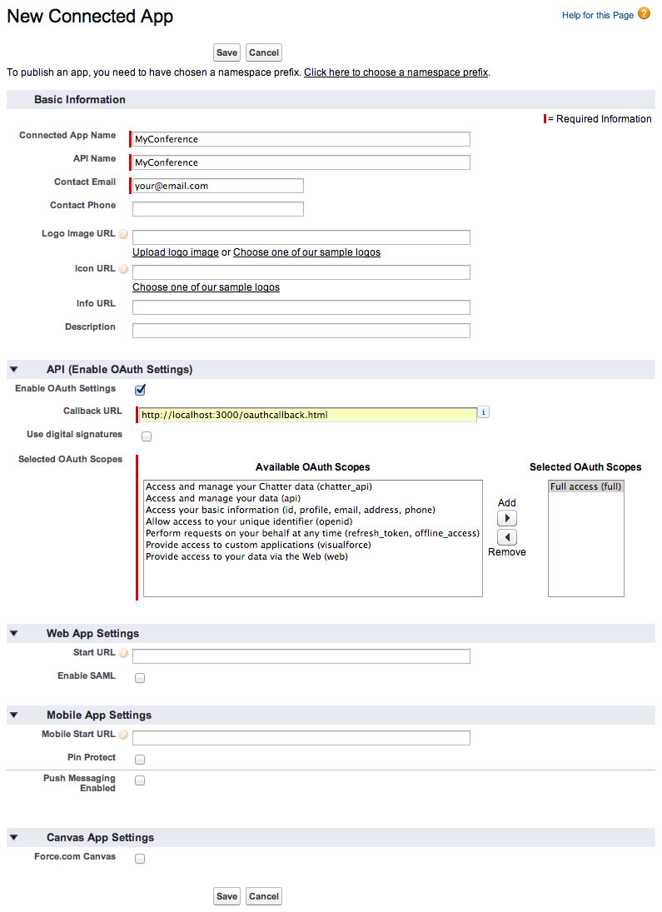
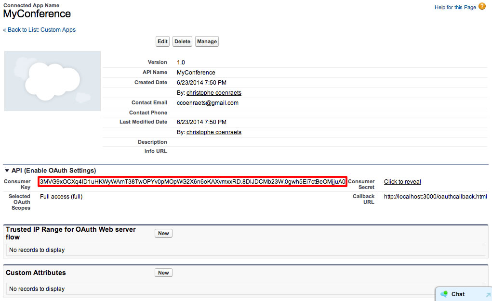

Module 10: Using the Salesforce1 Platform APIs
In this module, you create an application that runs outside your Salesforce instance: it uses OAuth to authenticate with Salesforce, and the REST APIs to access Salesforce data.

Requirement
You need Node.js to perform the exercises in this module. If you don't already have Node.js installed on your system, you can install it here.
This module is recommended but optional. If you are not interested in building custom applications (applications hosted outside your Salesforce instance), you can move to Module 11.
Step 1: Create a Connected App
In Setup, click Build > Create > Apps
In the Connected Apps section, click New, and define the Connected App as follows:
- Connected App Name: MyConference
- API Name: MyConference
- Contact Email: enter your email address
- Enabled OAuth Settings: Checked
- Callback URL: http://localhost:3000/oauthcallback.html
- Selected OAuth Scopes: Full Access (full)

Click Save.
Step 2: Install the Supporting Files
Download and unzip this file, or clone this repository
Using your favorite code editor, examine the code in client/index.html:
- It provides the basic markup to render a list of sessions as shown in the screenshot above.
- It uses ratchet.css. Ratchet is a simple CSS toolkit that provides styles for mobile applications.
- It uses ForceTK, the Force.com JavaScript REST Toolkit, to integrate with Salesforce.
- You will code the logic of the application (OAuth login) and data access logic in js/app.js which is empty at this time.
Using your favorite code editor, examine the code in client/oauthcallback.html:
At the end of the OAuth workflow, the Salesforce authentication process loads the redirect URI you specified in your Connected App and passes the access token and other OAuth values (server instance, refresh token, etc.) in the query string. Your redirect URI page simply needs to parse the query string, extract the access token and the other OAuth values, and pass that information back to your application by invoking the oauthCallback() function you will code in Step 4.
Using your favorite code editor, examine the code in server.js. server.js implements a small HTTP server that provides two features:
- Web server for static content. The document root for the web server is the client directory.
- Proxy for Salesforce REST requests. Because of the browser’s cross-origin restrictions, your JavaScript application hosted on your own server (or localhost) will not be able to make API calls directly to the *.salesforce.com domain. The solution is to proxy your API calls through your own server.
Step 3: Start the Node.js server
Open Terminal (Mac) or a Command prompt (Windows)
Navigate (cd) to the salesforce-developer-workshop (or salesforce-developer-workshop-master) directory
Install the Node.js server dependencies:
npm installStart the server:
node serverTest the application. Open a browser and access the following URL:
http://localhost:3000Since we didn't authenticate with Salesforce yet, all you should see at this point is an empty list of sessions.
Step 4: Authenticate with Salesforce using OAuth
Using your favorite code editor, open app.js in salesforce-developer-workshop/client/js
Declare the following variables:
var apiVersion = 'v30.0', clientId = 'YOUR_CONSUMER_KEY', loginUrl = 'https://login.salesforce.com/', redirectURI = 'http://localhost:3000/oauthcallback.html', proxyURL = 'http://localhost:3000/proxy/', client = new forcetk.Client(clientId, loginUrl, proxyURL);In Setup (back in Salesforce), click Build > Create > Apps. In the Connected Apps section, click MyConference, and copy the Consumer Key to your clipboard.

In app.js, replace YOUR_CONSUMER_KEY with the consumer key you copied to your clipboard
In app.js, declare a function named login() implemented as follows (right after the variable declarations):
function login() { var url = loginUrl + 'services/oauth2/authorize?display=popup&response_type=token' + '&client_id=' + encodeURIComponent(clientId) + '&redirect_uri=' + encodeURIComponent(redirectURI); window.open(url); }Declare a function named oauthCallback() implemented as follows (right after the login() function):
function oauthCallback(response) { if (response && response.access_token) { client.setSessionToken(response.access_token, apiVersion, response.instance_url); console.log('OAuth authentication succeeded'); } else { alert("AuthenticationError: No Token"); } }oauthCallback() is called by the oauthcallback.html page at the end of the OAuth workflow (see oauthcallback.html in step 2 for details).
Invoke the login() function as the last line of the app.js file:
login();Test the application
- Open a browser and access http://localhost:3000
- Login with your Developer Edition credentials
- Open the browser console: you should see the OAuth authentication succeeded message
It may take a few minutes for a Connected App to be available after you create it. If you get this message: error=invalidclientid&error_description=client%20identifier%20invalid, wait a few minutes and try again.
Step 5: Using the REST APIs
In app.js, declare a function named getSessions() implemented as follows (right after the oauthCallback() function):
function getSessions() { var soql = "SELECT Id, Name, Session_Date__c FROM Session__c", html = ''; client.query(soql, function (data) { var sessions = data.records; for (var i=0; i<sessions.length; i++) { html += '<li class="table-view-cell">' + sessions[i].Name + '</li>'; } $('.session-list').html(html); }, function (error) { alert("Error: " + JSON.stringify(error)); }); return false; }Modify the oauthCallback() function to invoke getSessions() when the user has been successfully authenticated.
console.log('OAuth authentication succeeded'); getSessions();Test the application
- Open a browser and access http://localhost:3000
- Login with your Developer Edition credentials
- You should now see the list of sessions
This is just the starting point for building a custom application written in JavaScript, authenticating with Salesforce using OAuth, and accessing Salesforce data using the REST APIs. If you are planning on building a real-life application based on this architecture, consider using a JavaScript framework such as Backbone.js or AngularJS with Ionic.
- Creating a Developer Edition Account
- Creating the Data Model
- Creating the Application
- Creating an Apex Class
- Accessing Data using SOQL and DML
- Creating Triggers
- Creating a Visualforce Page
- Creating a Controller Extension
- Using JavaScript in Visualforce Pages
- Using the Salesforce1 Platform APIs
- Testing
- Batch and Schedule